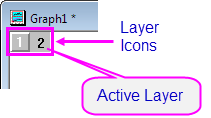
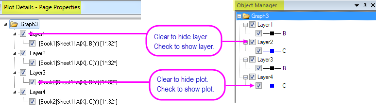

Layer, Zeichnungen und Objekte im Diagramm verbergen oder löschen
Labels-Data-Layer-Hide
Sie können verschiedene Elemente auf der Diagrammseite verbergen oder löschen.
- Das Verbergen eines Elements ist temporär und kann leicht umgekehrt werden.
- Das Löschen ist permanent und ist nicht immer mit Bearbeiten: Rückgängigmachen umkehrbar.
Beachten Sie, wenn Sie diese Elemente verbergen, werden Sie in keinem Ausgabetyp beinhaltet sein. Ein Grund zum „Verbergen“ kann das temporäre Entfernen von Elementen aus Ihrem Diagramm sein, wenn Sie drucken oder Grafikdateien für den Export erstellen.
Diagrammlayer verbergen
Alle Layer außer den aktiven Diagrammlayer verbergen
- Wählen Sie Ansicht: Zeige: Nur aktiver Layer oder klicken Sie mit der rechten Maustaste auf ein Diagrammlayersymbol und wählen Sie Andere Layer verbergen.
- Um alle Layer anzuzeigen, wählen Sie erneut Ansicht: Zeige: Nur aktiven Layer oder Andere Layer verbergen.
- Drücken Sie die Tastenkombination Strg + Alt + D.

Verborgenen Layer erneut anzeigen
- Um einen spezifischen Layer erneut anzuzeigen, klicken Sie mit der rechten Maustaste auf ein abgeblendetes Symbol und entfernen Sie das Häkchen für Layer verbergen.
- Drücken Sie die Tastenkombination Strg + Alt + D.
Spezifischen Diagrammlayer verbergen
- Klicken Sie mit der rechten Maustaste auf ein Layersymbol und wählen Sie im Kontextmenü Layer verbergen. Zum Anzeigen des Layers klicken Sie mit der rechten Maustaste auf das abgeblendete Symbol und wählen Sie erneut Layer verbergen.
- Entfernen Sie im linken Bedienfeld des Dialogs Details Zeichnung das Häkchen neben dem Layersymbol. Aktivieren Sie es wieder für die Anzeige des Layers.
- Entfernen Sie im Bedienfeld der Objektverwaltung das Häkchen neben dem Layer. Aktivieren Sie es wieder für die Anzeige des Layers.

Datenzeichnungen verbergen
== Datenzeichnungen verbergen oder zeigen